從事論壇教學服務多年，一直都在推廣「一圖檔一配置」，並藉由很多範例演練及教學，讓各位知道如何「模型空間製圖」、「配置空間出圖」，唯有這樣的方式可以透過預設功能「發佈」或「圖紙集」，快速批次出圖作業。
關於「批次出圖」則有一個很重要的觀念，必須搭配「頁面設置」功能，才能在「批次發佈」時有效快速出圖。
1.但是職場業界中需求個有不同，部分用戶習慣「一圖檔多配置」，有些用戶則是「模型空間製圖及出圖」不使用「配置」。業主要求將所有「配置圖面」轉成「模型圖面」，或是要求將圖檔改為「一圖檔一配置」方便出圖，這部份使用人力可說非常花時間
2.有時候還會因為公司添購新繪圖機(印表機)，造成圖面中的「頁面設置」必須更新設置，但是圖檔眾多更改「頁面設置」非常費時。
現在可以使用「AutoCAD顧問外掛程式 - 配置應用工具」來快速解決！

https://www.autocad-tw.com/t17730-topic
※使用說明※
功能一：快速刪除圖面中既有舊的「頁面設置」。
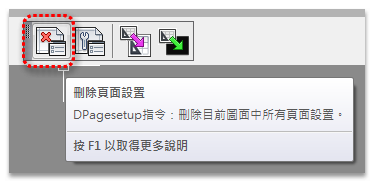
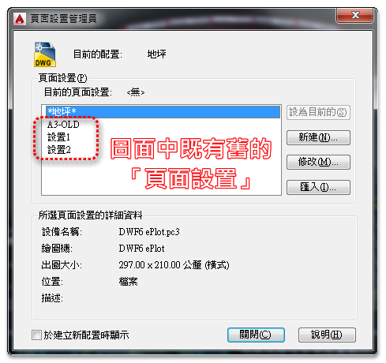
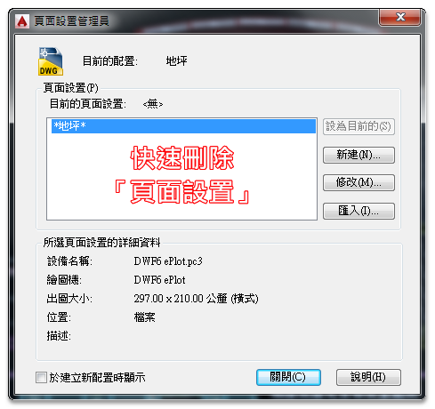
AutoCAD顧問外掛程式 - 配置應用工具1
功能二：快速將新的「頁面設置」，指定在所有「配置」並且設為「目前的」。
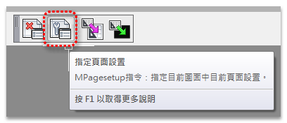
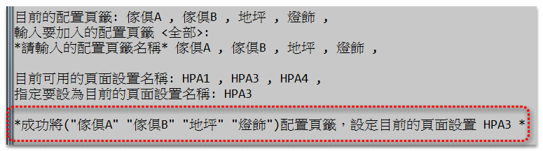
AutoCAD顧問外掛程式 - 配置應用工具2
功能三：可將「一圖檔多配置」，轉換為「一圖檔一配置圖面」。
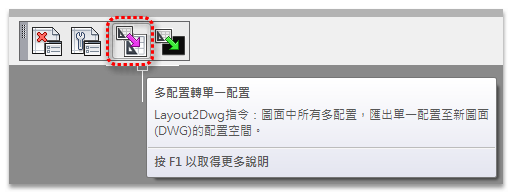
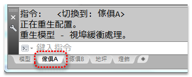
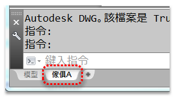
AutoCAD顧問外掛程式 - 配置應用工具3
功能四：可將「一圖檔多配置」，轉換為「多圖檔之模型圖面」。
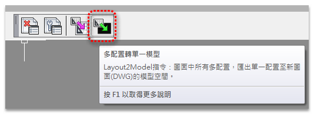
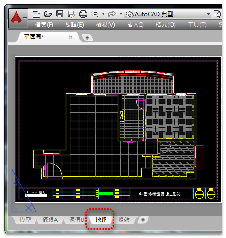
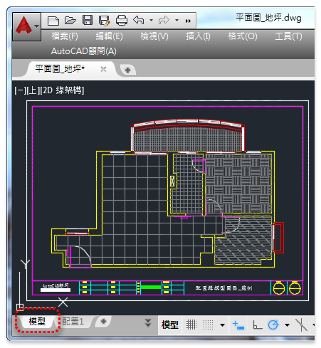
AutoCAD顧問外掛程式 - 配置應用工具4
2021/03/14 補充：
AutoCAD | 顧問論壇外掛 | 一檔多配置轉出獨立DWG檔 | 2021
https://www.autocad-tw.com/t24606-topic
看完之後別忘投下您寶貴的一票，完成投票可以下載範例影片喔！
「投票」AutoCAD顧問 - ACADAdviser外掛程式（點我）
20221204新增功能：
WblockTBLK指令(快捷鍵WT)：目前圖面中拆圖DWG圖檔(基準框(圖塊)及建立圖層名稱)。
原則1.需要有基準框(圖塊)範圍
原則2.拆圖時基準框需分圖層名稱
👇ACADAdviser外掛程式 新功能(一)圖檔拆圖
WblockPLOT指令(快捷鍵WP)：目前圖面中批次出圖(基準框(圖塊)及建立頁面設置)。
原則1.需要有基準框(圖塊)範圍
原則2.批次出圖須先建立頁面設置
👇ACADAdviser外掛程式 新功能(二)批次出圖
[軟體]加入贊助會員方案A - 可獲得ACADAdviser外掛程式